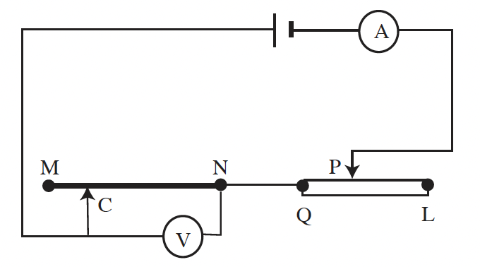
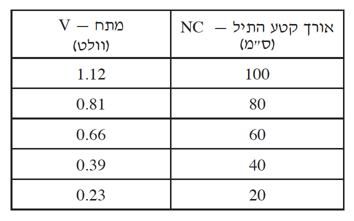

תלמיד בנה מעגל חשמלי, כדי למדוד את ההתנגדות הסגולית, \(\rho\) , של תיל כרום-ניקל \(MN\)
(ראו תרשים), ששטח החתך שלו הוא \(5 \cdot 10^{-7} m\) . מד-הזרם ומד-המתח הם אידיאליים.
התלמיד הקטין את אורך קטע התיל \(NC\) כמה פעמים (על ידי הזזת המגע הנייד \(C\) ימינה), ובכל פעם הוא הזיז את המגע הנייד, \(P\), של הנגד המשתנה, \(QL\), כך שהזרם בכל המדידות היה \(0.5A\) . בכל פעם הוא מדד את אורך קטע התיל \(NC\), ואת המתח שהציג מד-המתח \(V\) . תוצאות המדידות רשומות בטבלה שלפניכם.


א.כדי שהזרם במעגל יישאר קבוע, הזיז התלמיד בכל פעם את המגע הנייד \(P\) של הנגד המשתנה. לאיזה כיוון היה עליו להזיז את המגע הנייד \(P\) - לכיוון הקצה \(L\) של הנגד המשתנה או
לכיוון הקצה \(Q\) שלו? נמקו. (5 נקודות)
ב.סרטטו גרף של הוריית מד-המתח \(V\) כפונקציה של אורך קטע התיל \(NC\) . (8 נקודות)
ג.חשבו בעזרת הגרף את ההתנגדות הסגולית, \(\rho\) , של התיל. (10 נקודות)
ד.כדי למדוד את ההתנגדות הסגולית בשיטה המתוארת בשאלה זו, היה חשוב שהזרם בכל המדידות יהיה אותו זרם. הסבירו מדוע. (5 נקודות)
ה.אילו התלמיד היה משתמש בתיל כרום-ניקל ששטח החתך שלו היה כפול מזה של
התיל הנתון \(MN\) , האם שיפוע הקו הישר של המתח כפונקציה של אורך התיל היה גדול מזה שסרטטתם בסעיף ב, קטן ממנו או שווה לו? נמקו. (5.33 נקודות)